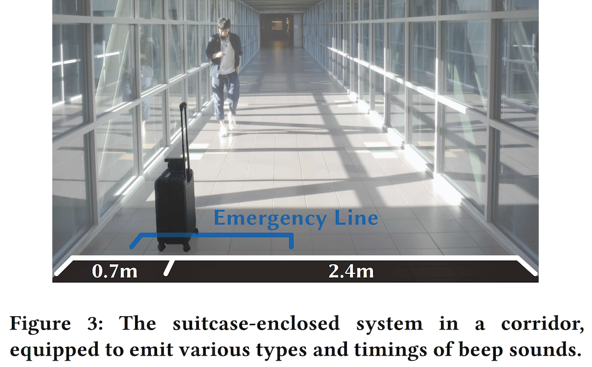
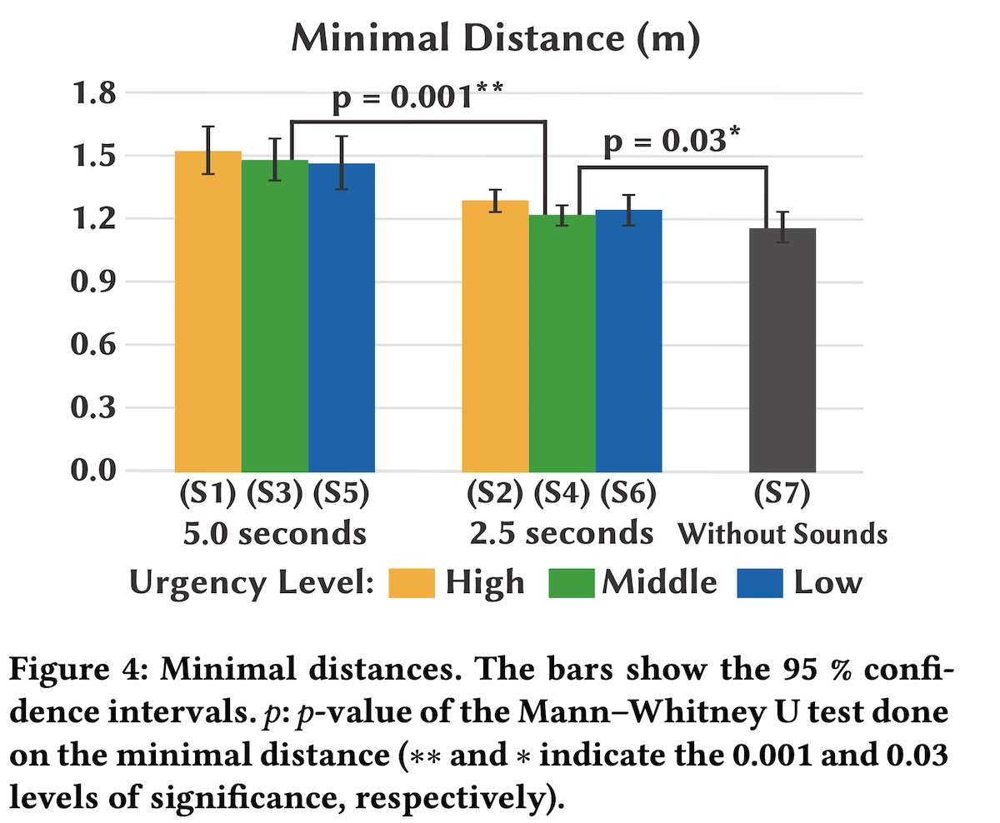
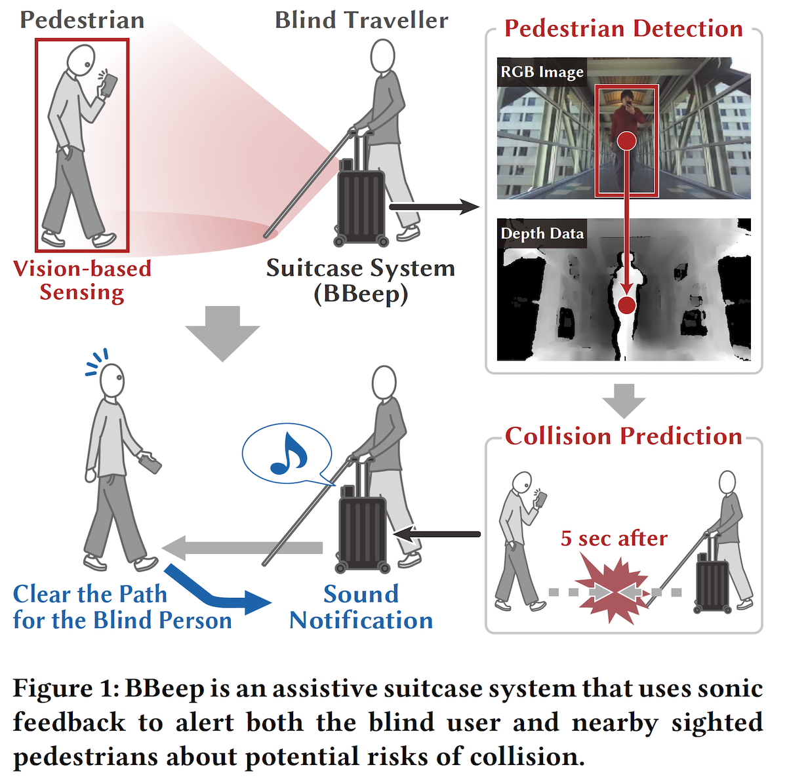
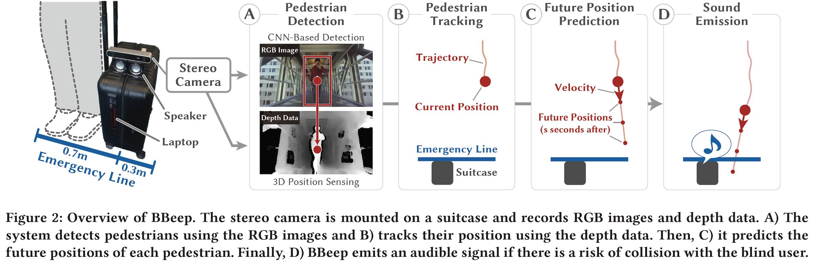
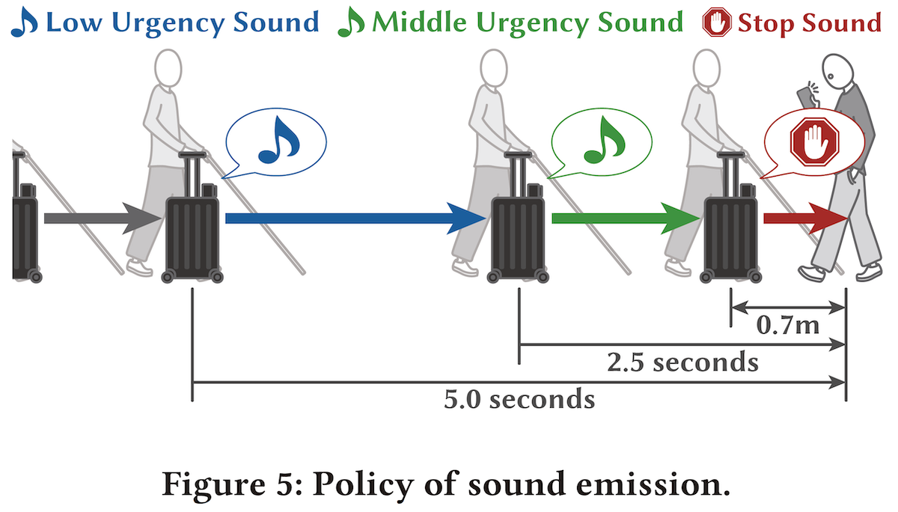
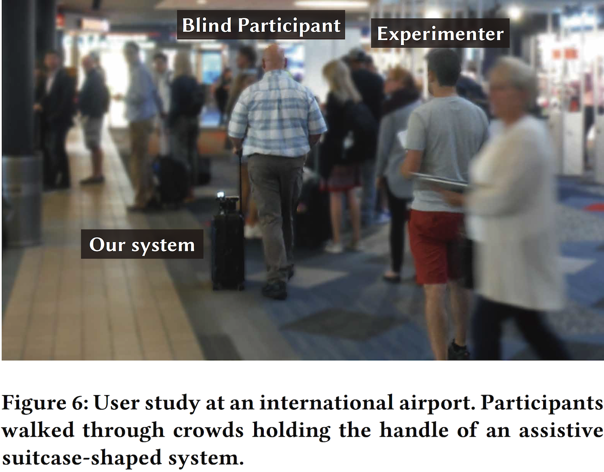

論文の図の代替テキストの書き方
May. 6th, 2020
こんにちは．
普段，視覚障害者支援に関する研究をしている博士学生（D1）のカユカワ（
@_wotipati_）です．
皆さんは「代替テキスト（Alternative Text）」というものをご存知でしょうか？
代替テキストとは，論文中の図に対して目の不自由な方などが図の内容を理解できるように説明する文章のことです．
例えば論文内にこんな図があったとします

S. Kayukawa, et al. “BBeep: A Sonic Collision Avoidance System for Blind Travellers and Nearby Pedestrians”, in CHI ‘19.
注）今後この記事で登場する図や代替テキストの例は，特に記載が無ければ上記論文から引用したものです．
この図では，論文中で行った実験の様子を写真を用いて読者に伝えています．
視覚が持つ情報量は膨大にあるため，論文に加えてこの図を見れば「ああ，幅が3mくらいある廊下の端の方にスーツケースを置いて，道ゆく人の反応を観察したんだな．」と理解することができます．
しかし，視覚障害者の方が論文を読むとき（大体，PDFの読み上げソフトを使用して論文を読まれています）は，本文からのリファレンスや図のキャプションによって図の存在を知ることはできますが，具体的にどんな図なのかを知る術がありません．
そこで論文の図に対して以下のようなテキストを紐づけておくことで，視覚障害者の方でも不自由なく論文の内容を理解できるように手助けします．このテキストが代替テキストです．
This figure shows the condition of our observation study. We placed the system in a straight corridor. The corridor is 3.1 meters wide, and the suitcase is placed 0.7 meters from a wall.
論文に代替テキストを設定することは，論文をアクセシブルにする（身体に不自由のある方でも読めるようにする）上で必須の作業なのですが，最近の学会では論文のアクセシブル化が求められ始めています．
例えばHuman-Computer Interaction (HCI)という分野の国際会議であるCHI2020では
以下のように記載されており，強く推奨されています．
CHI 2020 promotes diversity and strongly encourage you to submit accessible documents so that your content can be read by the greatest number of readers. Making an accessible PDF requires only a few steps, but ensures that your paper is readable by readers and reviewers.
注）CHI全体の方針としては「強く推奨（storongly encourage）」ですが，Accessibility committeeに論文を出す際は必須です．他にもACM ASSETSなどのアクセシビリティに特化した学会でも必須であることが多いです．査読者の方の中に身体に不自由を抱えている方がいらっしゃるからです．
前置きが長くなってしまいましたが，この記事では，具体的にどういう風に代替テキストを書けば良いのか，気をつけるべき点はどこなのかを，具体例を上げつつ紹介します．
参考文献
実はACM SIGACCESSが代替テキストの書き方をまとめてくれています（
Link）．すごいわかりやすいです．このサイトにもwell-written exampleがたくさん紹介されているので，よかったら参考にしてみてください．正直このサイトを見れば終了なんですが，日本語で書かれた記事が見当たらなかったので，僕の経験も交えつつ説明していこうと思います．
基本的な考え方
大事なことは「キャプションと代替テキストは違う」ということです．
例えばグラフの画像を載せるときは，キャプションは「XXXの平均」のように図中で示すデータの性質を述べる程度ですが，代替テキストでは具体的なデータの中身（数値）を説明する必要があります．
つまり「晴眼者が図から読み取る情報をなるべく伝えられるようにする」ということが大事です．特に論文の内容理解において重要な内容は必ず伝えられるようにしなければなりません．
最初に上げた例においても，「廊下が直線であること，廊下の幅が3.1mでスーツケースが壁から0.7mの距離に置かれていること」などは，晴眼者が図から読み取っている情報になるため，代替テキストに明記します．
一番わかりやすい例はデータを示したグラフだと思うので，まずはグラフ画像の代替テキストの書き方について説明します．
グラフの代替テキストの書き方
以下の図について代替テキストを書きます．

キャプションには，図のグラフがMinimal distanceを表していることや，エラーバーが95%信頼区間を表していること，検定で得られたp-valueが描かれていることを説明していますが，肝心のデータの数値は書かれていません．
そこで以下のように代替テキストを書きます．
This figure shows the minimal distance in a graph for each sound pattern. Results are shown as S1 = 1.52, S2 = 1.29, S3 = 1.48, S4 = 1.22, S5 = 1.47, S6 = 1.25, and S7 = 1.16 meters respectively. The figure also shows the significant differences between S3 and S4 as well as S4 and S7 with 0.001 and 0.03 levels of significances, respectively.
今回の論文の主張として，S1~S7の値，およびS3-S4とS4-S7間で有意差が確認されたことが重要であるため，その部分について具体的な数値を書きながら説明します．
注）もちろん必要であれば，信頼区間の値を書きます．書きすぎて困ることはないです．信頼区間の大きさが論文内の議論の上で重要であれば必ず書く必要があります．
注）もし，代替テキストをSupplementary MaterialとしてPDF形式で提出可能な場合は，グラフの数値を全て表（Table）にまとめて提出するのもアリです．Adobe Acrobatなどのソフトを使用すれば視覚障害者の方達が表を理解できるように読み上げの設定をすることができます．しかし，会議によってはSubmission PageでPlain Textで代替テキストを入力する形式もあるため，そこは注意が必要です．
ここまでで大体の雰囲気は掴めたかと思います．あとは例を見るのが早いと思うため，以降は僕の論文で使用した図と作成した代替テキストをどんどん載せていきます．
その他の例
・Teaser Image

This figure shows the flow of our system with exemplifying sketches and images. It portrays both the user and a pedestrian, showing all the sequence of steps from, detecting the pedestrian’s position using the RGB image and the depth data; predicting that a future collision will occur; and provide a sound notification. The image shows the pedestrian clearing the path for the user.
・提案手法のフロー

The caption provides a comprehensive description of this image. It first shows a sketch of our prototype. A) shows real images, while B, C and D show sketches with the users’ trajectory and predictions.
It also shows the emergency line around the suitcase, which has 1 meter in length to detect collision with pedestrians.
・提案システムの挙動を示したイラスト

This figure shows our designed policy of sound emission for BBeep, using a sketched example. It shows that different types of sounds are provided depending on the distance (in terms of time it takes to a potential collision with the user), using colors to show such differences.
・評価実験の様子

This figure shows an example situation of our user evaluation in an airport. A blind participant walk through a crowded environment with our system. A researcher is walking behind them to guarantee their safety.
フローチャートの書き方
僕の論文には細かいフローチャートを使用した図がなかったため具体例をあげることはできませんが，冒頭で紹介した
SIG ACCESSのサイトにはフローチャートの例も載っています．
以下のような複雑なフローチャート図に対する代替テキストの例が載せられているので，是非参考にしてみてください．
代替テキストと論文はどうやって紐づければいいの？
学会ごとにやり方が指定されています．必ず確認しましょう．
投稿サイトに代替テキストを入力する欄があったり，Supplementary materialとして提出を求められる場合もあります．
あとは，Adobe Acrobatを用いて論文のPDFに埋め込むように指示される場合もあります（下図）．
Adobe Acrobatを用いて論文をアクセシブルに．
もし，この論文のアクセシブル化のやり方について知りたい方がいらっしゃいましたら，
twitterでもなんでも良いのでお気軽に僕に連絡ください．知りたい方がそれなりにいたら，気が向いた時に解説記事を書こうと思います．
おわりに
代替テキストに関する書き方の説明は以上です．
別にそんなに難しい話でも高度なテクニックを必要とする訳でもありません．必要な情報を書けばいいだけです．
学会によっては代替テキストの提出が強く推奨されており，今後も継続されていくと思います．しかし皆さん，Optionalだからといって空白のまま提出していないでしょうか？
代替テキストを書く作業はそこまで難しい訳でも，膨大な手間が必要な作業でもありません．でも，そのほんの少しの心遣いで，世界のどこかでいつか皆さんの論文を読むことができる方が増えるかもしれません．そういう意味ではカンペキな代替テキストでなくても何か助けになるかもしれません．
アクセシビリティに関わる研究者として，皆さんにも投稿期限前に少し時間と心の余裕があったら，代替テキストを書いて論文に添えて頂けるととても嬉しいです．
本記事は以上です．
最後までお読みいただき，ありがとうございました．